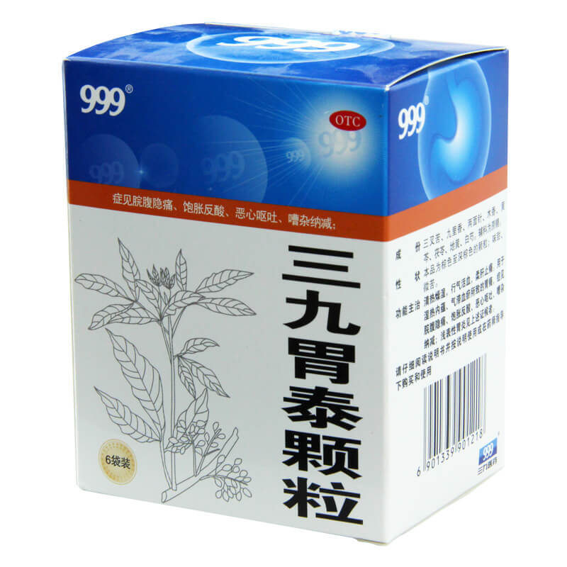
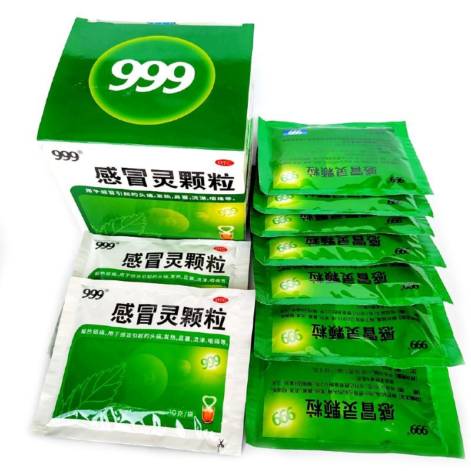
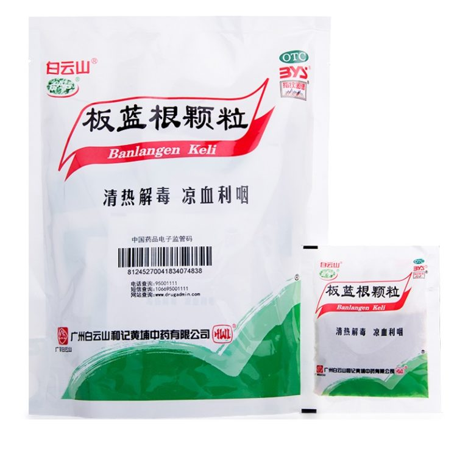
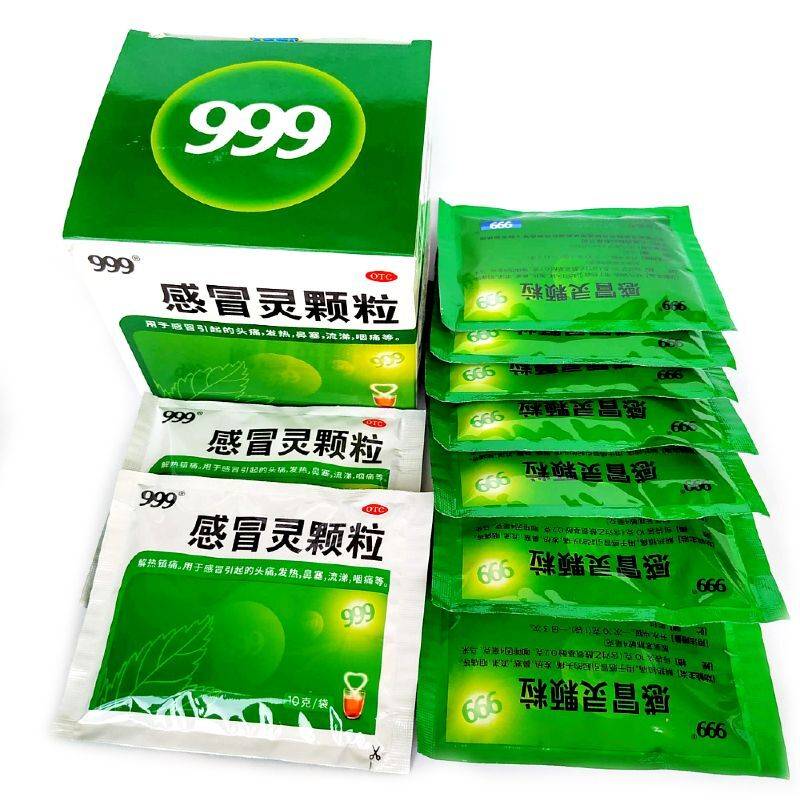
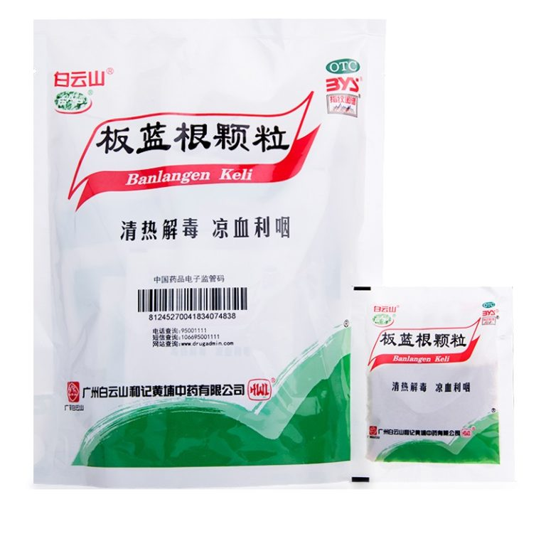

Добро пожаловать на страницу о лечебных порошках!

О лечебных порошках:
Лечебные порошки — это продукты, содержащие полезные вещества и используемые в медицинских целях. Они могут быть различных видов и применяются для лечения различных заболеваний.
Виды лечебных порошков:
- Куркума
- Имбирь
- Корица
- Сода бикарбонат
Применение лечебных порошков:
Лечебные порошки могут использоваться как добавки к пище, для приготовления масок, для ингаляций и в других медицинских процедурах.

 


